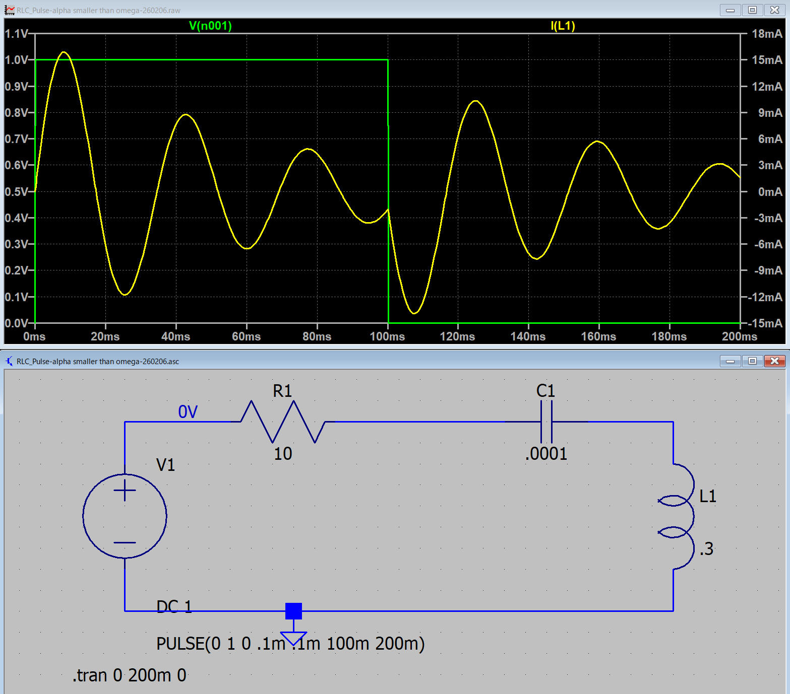

１５ー１ー１２．ステップ関数（RLC回路）
α < ω0
平方根内が虚数となるので，
\(\Large \displaystyle \sqrt{ \alpha^2 - \omega_0^2} = j \sqrt{ \omega_0^2 - \alpha^2} \equiv j \omega \)
\(\Large \displaystyle I(t) = e^{- \alpha (t - t_0)} \cdot \left[ A \cdot exp \left\{ j \omega (t-t_0) \right\} + B \cdot exp \left\{ - j \omega (t-t_0) \right\} \right] \)
\(\Large \displaystyle = A \cdot exp \left\{ (-\alpha + j \omega) (t-t_0) \right\} + B \cdot exp \left\{ (-\alpha- j \omega) (t-t_0) \right\} \)
t=t0において，
\(\Large \displaystyle I(t_0) = A + B \)
\(\Large \displaystyle I'(t_0) = (-\alpha + j \omega) \ A + (-\alpha- j \omega) \ B \)
です．変形すると，
\(\Large \displaystyle (-\alpha + j \omega) \ A + (-\alpha + j \omega) \ B = (-\alpha + j \omega) \ I(t_0) \)
\(\Large \displaystyle (-\alpha + j \omega) \ A + (-\alpha- j \omega) \ B = I'(t_0) \)
となるので，
\(\Large \displaystyle 2 j \omega B = (-\alpha + j \omega) \ I(t_0) - I'(t_0)\)
\(\Large \displaystyle \color{red}{B} = \frac{(-\alpha + j \omega) \ I(t_0) - I'(t_0)}{2j \omega} \color{red}{= -\frac{\alpha \ I(t_0) + I'(t_0)}{2j \omega} + \frac{ I(t_0) }{2 }}\)
\(\Large \displaystyle \color{red}{A} = I(t_0) - \frac{(-\alpha + j \omega) \ I(t_0) - I'(t_0)}{2j \omega} = \frac{2j \omega I(t_0)-(-\alpha + j \omega) \ I(t_0) + I'(t_0)}{2j \omega} \)
\(\Large \displaystyle = \frac{(\alpha + j \omega) \ I(t_0) + I'(t_0)}{2j \omega} \color{red}{= \frac{\alpha \ I(t_0) + I'(t_0)}{2j \omega} + \frac{ I(t_0) }{2 }}\)
となります，まとめると，
\(\Large \displaystyle I(t) = A \cdot exp \left\{ (-\alpha + j \omega) (t-t_0) \right\} + B \cdot exp \left\{ (-\alpha- j \omega) (t-t_0) \right\} \)
\(\Large \displaystyle = e^{ - \alpha (t-t_0)} \left[ A \ e^{j \omega (t-t_0)} + B \ e^{ -j \omega (t-t_0)} \right]\)
\(\Large \displaystyle = e^{ - \alpha (t-t_0)} \left[ \left( \frac{\alpha \ I(t_0) + I'(t_0)}{2j \omega} + \frac{ I(t_0) }{2 } \right) \ e^{j \omega (t-t_0)} + \left( -\frac{\alpha \ I(t_0) + I'(t_0)}{2j \omega} + \frac{ I(t_0) }{2 } \right) \ e^{ -j \omega (t-t_0)} \right]\)
\(\Large \displaystyle =e^{ - \alpha (t-t_0)} \left\{\frac{\alpha \ I(t_0) + I'(t_0)}{2j \omega}\left[ \ e^{j \omega (t-t_0)} - \ e^{ -j \omega (t-t_0)} \right] + \frac{ I(t_0) }{2 }\left[ \ e^{j \omega (t-t_0)} + \ e^{ -j \omega (t-t_0)} \right] \right\} \)
\(\Large \displaystyle =\frac{\alpha \ I(t_0) + I'(t_0)}{ \omega} \ e^{ - \alpha (t-t_0)} \ \sin \ \omega (t - t_0) + I(t_0) \ e^{ - \alpha (t-t_0)} \ \ cos \omega (t - t_0) \)
となります．
ここで，
\(\Large \displaystyle V_C = \frac{1}{C} \ \int_0^{t_0} I(t) \ dt \)
\(\Large \displaystyle I'(t_0) = - \frac{R \cdot I(t_0) + V_C }{L} \)
です．
つぎに，電流の微分値を求めるため，VC(t0)を計算していきます．
\(\Large \displaystyle I(t) = e^{- \alpha t} \cdot \frac{V_0}{ \omega L}\ sin ( \omega t) \)
\(\Large \displaystyle V_C(t_0) = \frac{1}{C} \int_0^{t_0} I(t) \ dt \)
\(\Large \displaystyle = \frac{V_0}{ \omega CL} \int_0^{t_0} e^{- \alpha t} \cdot sin ( \omega t) \ dt \)
この積分は，ここ，を参考にして，
\(\Large \displaystyle \int_0^{t_0} e^{- \alpha t} \ sin ( \omega t) \ dt = \frac{1}{\alpha^2 + \omega^2} \left[- \alpha \ e^{- \alpha t_0} \cdot sin ( \omega t_0) - \omega \ e^{- \alpha t_0} \cdot cos ( \omega t_0) \right] - \frac{1}{\alpha^2 + \omega^2} \left[- \omega \right] \)
\(\Large \displaystyle = \frac{\omega - e^{ \alpha t_0} \left[\omega \cdot cos ( \omega t_0) + \alpha \cdot sin ( \omega t_0) \right]}{\alpha^2 + \omega^2} \)
\(\Large \displaystyle V_C(t_0) = \frac{1}{C} \int_0^{t_0} I(t) \ dt \)
\(\Large \displaystyle = \frac{V_0}{ \omega CL} \int_0^{t_0} e^{- \alpha t} \cdot sin ( \omega t) \ dt \)
\(\Large \displaystyle = \frac{V_0}{ \omega CL} \frac{\omega - e^{ \alpha t_0} \left[\omega \cdot cos ( \omega t_0) + \alpha \cdot sin ( \omega t_0) \right]}{\alpha^2 + \omega^2} \)
となります．ω，は，
\(\Large \displaystyle \omega = \sqrt{ \omega_0^2 - \alpha^2} \rightarrow \alpha^2 + \omega^2 = \omega_0^2 \)
\(\Large \displaystyle \omega_0 = \frac{1}{ \sqrt{LC}} \rightarrow \alpha^2 + \omega^2 =\omega_0^2 =\frac{1}{LC} \)
となるので，
\(\Large \displaystyle V_C(t_0) = \frac{V_0}{\omega} \ \left\{\omega - e^{ -\alpha t_0} \left[\omega \cdot cos ( \omega t_0) + \alpha \cdot sin ( \omega t_0) \right] \right\} \)
\(\Large \displaystyle = V_0 \ \left\{1 - e^{ -\alpha t_0} \left[ cos ( \omega t_0) + \frac{\alpha}{\omega} \cdot sin ( \omega t_0) \right] \right\} \)
となります．
t=t0，の場合は， I'(t0)は，
\(\Large \displaystyle R \cdot I(t_0) + L \ \frac{d}{dt} I(t_0) + V_C = 0 \)
\(\Large \displaystyle I'(t_0) = - \frac{ V_C + R \cdot I(t_0) }{L} \)
\(\Large \displaystyle I(t_0) = e^{- \alpha t_0} \cdot \frac{V_0}{ \omega L}\ sin ( \omega t_0) \)
\(\Large \displaystyle V_C = V_0 \ \left\{1 - e^{ -\alpha t_0} \left[ cos ( \omega t_0)+ \frac{\alpha}{\omega} \cdot sin ( \omega t_0) \right] \right\} \)
となりますので，I'(t0)，は，
\(\Large \displaystyle I'(t_0) = - \frac{ V_C + R \cdot I(t_0) }{L} \)
\(\Large \displaystyle = - \frac{1}{L} \left[ V_0 \ \left\{1 - e^{ -\alpha t_0} \left[ cos ( \omega t_0)+ \frac{\alpha}{\omega} \cdot sin ( \omega t_0) \right] \right\} + R \cdot e^{- \alpha t_0} \cdot \frac{V_0}{ \omega L}\ sin ( \omega t_0) \right] \)
となります．整理すると，
\(\Large \displaystyle = - \frac{V_0}{L} \left[ 1 - e^{ -\alpha t_0} \left[ cos ( \omega t_0)+ \frac{\alpha}{\omega} \cdot sin ( \omega t_0) \right] + e^{- \alpha t_0} \cdot \frac{R}{ \omega L}\ sin ( \omega t_0) \right] \)
\(\Large \displaystyle = - \frac{V_0}{L} \left[ 1 - e^{ -\alpha t_0} cos ( \omega t_0)-e^{ -\alpha t_0} \frac{1}{\omega} \left\{ \alpha - \frac{R}{ L}\ \right\}sin ( \omega t_0)\right] \)
\(\Large \displaystyle \alpha = \frac{R}{2L} \) なので，
\(\Large \displaystyle \alpha - \frac{R}{ L} = \alpha - 2\alpha =-\alpha \)
となるので，
\(\Large \displaystyle I'(t_0)= - \frac{V_0}{L} \left[ 1 - e^{ -\alpha t_0} cos ( \omega t_0)+e^{ -\alpha t_0} \frac{\alpha}{\omega} \ sin ( \omega t_0)\right] \)
\(\Large \displaystyle = - \frac{V_0}{L} \left[ 1 - e^{ -\alpha t_0} \left\{ cos ( \omega t_0)- \frac{\alpha}{\omega} \ sin ( \omega t_0) \right\} \right] \)
となり，
\(\Large \displaystyle I(t) =\frac{\alpha \ I(t_0) + I'(t_0)}{ \omega} \ e^{ - \alpha (t-t_0)} \ \sin \ \omega (t - t_0) + I(t_0) \ e^{ - \alpha (t-t_0)} \ \ cos \omega (t - t_0) \)
から電流変化を見ればいいことになります．
右辺第一項の係数を整理します．
\(\Large \displaystyle \frac{\alpha \ I(t_0) + I'(t_0)}{ \omega} = \frac{1}{ \omega}\ \left[ \alpha \cdot e^{- \alpha t_0} \cdot \frac{V_0}{ \omega L}\ sin ( \omega t_0)- \frac{V_0}{L} \left[ 1 - e^{ -\alpha t_0} \left\{ cos ( \omega t_0)- \frac{\alpha}{\omega} \ sin ( \omega t_0) \right\} \right] \right] \)
\(\Large \displaystyle = \frac{V_0}{ \omega L }\ \left[ \alpha \cdot e^{- \alpha t_0} \cdot \frac{1}{ \omega }\ sin ( \omega t_0)- \left[ 1 - e^{ -\alpha t_0} \left\{ cos ( \omega t_0)- \frac{\alpha}{\omega} \ sin ( \omega t_0) \right\} \right] \right] \)
\(\Large \displaystyle = \frac{V_0}{ \omega L }\ \left[ -1 + e^{- \alpha t_0} \cdot \left\{ \frac{\alpha }{ \omega }\ sin ( \omega t_0)- \frac{\alpha}{\omega} \ sin ( \omega t_0) + cos ( \omega t_0) \right\} \right] \)
\(\Large \displaystyle = \frac{V_0}{ \omega L }\ \left[ -1 + e^{- \alpha t_0} \cdot cos ( \omega t_0) \right] \)
となるので，右辺第一項は，
\(\Large \displaystyle = \frac{V_0}{ \omega L }\ \left[ -1 + e^{- \alpha t_0} \cdot cos ( \omega t_0) \right] \ e^{ - \alpha (t-t_0)} \ \sin \ \omega (t - t_0)\)
\(\Large \displaystyle = \frac{V_0}{ \omega L }\ \left[ -e^{ - \alpha (t-t_0)} \ \sin \ \omega (t - t_0) + e^{- \alpha t} \cdot cos ( \omega t_0) \ \sin \ \omega (t - t_0)\right] \)
右辺第二項は，
\(\Large \displaystyle = e^{- \alpha t_0} \cdot \frac{V_0}{ \omega L}\ sin ( \omega t_0) \ e^{ - \alpha (t-t_0)} \ \ cos \omega (t - t_0)\)
\(\Large \displaystyle = \frac{V_0}{ \omega L} \cdot e^{- \alpha t} \cdot\ sin ( \omega t_0) \ cos \ \omega (t - t_0)\)
となるので，まとめると，
\(\Large \displaystyle I(t) = \frac{V_0}{ \omega L }\ \left[ -e^{ - \alpha (t-t_0)} \ \sin \ \omega (t - t_0) + e^{- \alpha t} \cdot cos ( \omega t_0) \ \sin \ \omega (t - t_0)+ e^{- \alpha t} \cdot\ sin ( \omega t_0) \ cos \ \omega (t - t_0) \right] \)
ここで，三角関数の公式より，
\(\Large \displaystyle sin \ (x+y) = sin \ x \cdot cos \ y + cos \ x \cdot sin y \)
となるので，第二項，第三項がまとめられて，
\(\Large \displaystyle \color{red}{I(t) = \frac{V_0}{ \omega L }\ \left[ e^{- \alpha t} \cdot sin ( \omega t) -e^{ - \alpha (t-t_0)} \ \sin \ \omega (t - t_0) \right]} \)
となります．
この式の結果は何を意味しているかというと，
第一項 ： 最初のステップオンの際の波形（たとえば，0→1）
第二項 ： t=t0，において，1→0，のように，逆のステップを入力した波形
なので，ステップオフ後，の波形は，
ステップオンの波形の残り ＋ マイナスのステップの波形 の和
となるわけです．
実際に，LTspice，でシミュレートしてみましょう．ここ，と同様に，
V0 : 1 V
R : 10 Ω
L : 0.3 H
C : 0.0001 F
とすると，
\(\Large \displaystyle \omega_0 = \frac{1}{\sqrt{0.3 \times 0.0001} } = 182.57 \ (1/s) \)
\(\Large \displaystyle \alpha \equiv \frac{10}{2 \times 0.3} = 16.67 \ (1/s) \)
となり，α < ω0，の条件となります．
\(\Large \displaystyle \omega = \sqrt{ \omega_0^2 - \alpha^2 } = 181.81 (rad/s) = 28.93 Hz \)
となり，LTspiceでシミュレートすると，

となります．式と当てはめてみると，
と一致することがわかります（全領域で）．
青点線，が右辺第二項，で右辺第一項との和が，シミュレーションと一致することがわかります．